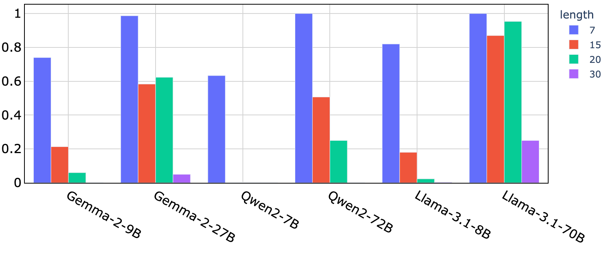
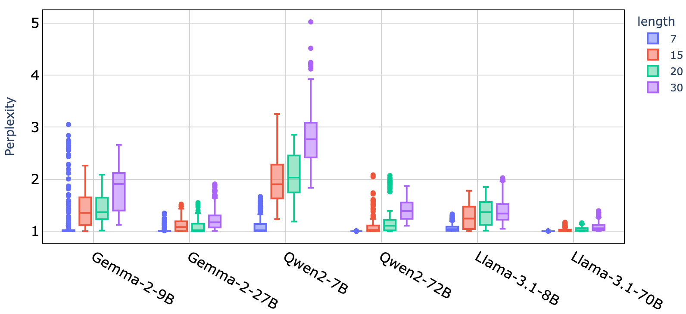

[Executive Function & Memory] (Working & Short-term Memory) Backward Digit Span
In the backward digit span task, smaller models have decreased accuracy after 15-20 digit
(mean backward digit span of human is 5). Like humans, LLMs find the reversal operation makes this
task more difficult.

-
Mean model accuracy, by digit sequence length, in the backward digit span task.
Larger models do better at the backward digit task than their smaller counterparts.

-
Perplexity of the correct sequences in the backward digit span task yields more nuance,
e.g., note that Qwen2-7B accuracy is equal for lengths 15, 20, and 30, the perplexities
indicate that its understanding of 30-length digits is worse.